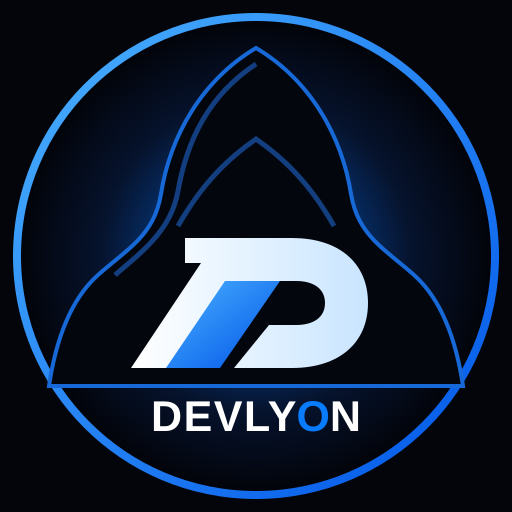

Business website design
Credible, considered websites that introduce your business and turn attention into enquiries.

INDEPENDENT DIGITAL STUDIO NIGERIA + WORLDWIDE
Distinctive websites. Thoughtful digital experiences. Built to make your next move count.
01 / THE POINT OF VIEW
We partner with businesses ready to show up differently. From the first impression to the final interaction, every detail has a job: make your brand clearer, your experience stronger and your next step easier.
02 / WHAT WE DO
The right digital foundation
for wherever you're going.
Credible, considered websites that introduce your business and turn attention into enquiries.
Purpose-built digital experiences shaped around your goals, users and way of working.
Clear, intuitive online stores designed to make discovering and buying feel effortless.
Focused pages that communicate one strong idea and guide visitors toward action.
A sharper visual direction and better experience for a website ready for its next chapter.
Ongoing care to help keep your website updated, reliable and running smoothly.
Distinctive online spaces that present your work, perspective and capabilities with clarity.
Useful browser-based tools and applications built around real workflows and needs.
03 / SELECTED DIRECTIONS
A glimpse of the visual thinking
we bring to the digital space.
NOTE These are self-initiated demonstration concepts, not commissioned client projects.
04 / THE STUDIO
DEVLYON is an independent digital studio built around a simple belief: good digital work should do more than look different. It should make a difference.
We bring strategy, design and development together to help businesses build a clearer, more confident presence online. The identity behind the studio stays anonymous. The work speaks.
Let's make something matter ↗05 / WHY DEVLYON
We start with what your business and audience actually need.
Every visual and interaction should earn its place.
Good experiences balance visual impact with real-world function.
Clear communication and thoughtful collaboration at every stage.
06 / HOW WE WORK
A considered process.
No unnecessary complexity.
Understand your business, audience and goals.
Shape the structure, direction and priorities.
Turn the direction into a considered experience.
Build, refine and test the real thing.
Go live with a clear path for what comes next.
07 / GOOD TO KNOW
Have something else in mind? Start a conversation and tell us what you're working on.
Talk to DEVLYON ↗We work with businesses, founders, creators and teams across different industries. If you have a clear goal and need a stronger digital presence, let's talk.
Yes. DEVLYON is open to projects in Nigeria and worldwide. Communication and project details can be handled remotely.
Pricing depends on the scope, features and complexity of the project. Share what you have in mind and we'll discuss a suitable approach.
Timelines vary with the size of the website, features and how quickly content and feedback are provided. We'll agree on a realistic timeline before work begins.
Absolutely. We can review your current website and help improve its structure, visual direction, usability and performance.
A short explanation of your business, what you want the website to achieve and any examples you like. We can work through the details together.
08 / YOUR NEXT MOVE
Tell us what you're building, improving or imagining. The first step is a conversation.